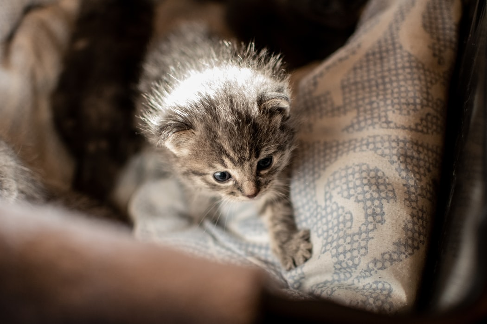

Hello, I am Apple.
I am a F4 science girl studying in Sacred Heart Canossian College (English Section). I have been studying in this school for over 9 years!
In my spare time, I enjoy playing piano and guitar. I am currently writing a new song called 'Left on Read'.
I love cats so much.
